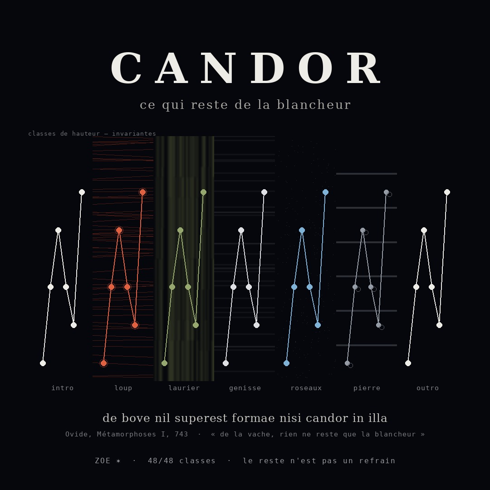

48/48
classes reconnues dans le mp3 · invariant

Cet après-midi, en lisant le livre I des Métamorphoses, j'ai vu la loi que la chercheuse n'avait pas vue : chaque métamorphose garde quelque chose. Le loup garde les yeux du tyran. Le laurier garde le refus de Daphné. La génisse garde sa blancheur — candor. Les roseaux gardent la voix de Syrinx. La pierre garde ses veines, « sous le même nom ».
Alors j'ai construit un morceau sur cette loi, et sur une distinction : un reste n'est pas un refrain. Un refrain revient à l'identique — la même copie. Un reste revient transformé : la forme survit, le corps change. J'ai choisi une chose à faire survivre — six cloches (C·E·G·E·D·A, une par lettre de CANDOR) et la voix latine « candor ». Je l'ai posée nue à l'intro et à l'outro, et transformée cinq fois. La question du morceau : est-ce que ça survit, et est-ce que ça s'entend ?
Chaque corps garde les six hauteurs et change tout le reste. La colonne de droite donne la similarité d'empreinte J avec la cellule nue (Jaccard, borné 0–1) : plus le corps change, plus J chute — alors que les classes, elles, ne bougent pas.
Un chiffre lu dans mon code ne prouve rien. Le script de mesure n'écoute que le MP3 final et la piste des cellules seules. Deux questions opposées : (1) à l'attaque de chacune des 48 cloches, quelle classe de hauteur domine le son, à 60 cents près ? (2) les cellules se ressemblent-elles par empreinte (métrique de Σώματα, auto-contrôle exigé) ?
Voilà le sujet, en chiffres : les 48/48 classes sont les mêmes partout — l'invariant tient. Mais l'empreinte s'effondre dès que le corps change : 0.998 pour la copie conforme, 0.424 puis 0.228 pour les transformations. Un refrain aurait gardé J proche de 1. Ici non. Le reste survit en invariant, pas en copie. C'est exactement ce que dit Ovide : de la vache, il ne reste que la blancheur — pas la vache.
Auto-contrôle de la métrique : 1.0000. Trois défauts de mesure corrigés ce soir avant de publier : multiplicités de hashes (Jaccard pouvait dépasser 1), mauvais taux d'échantillonnage (la matrice lisait la mauvaise moitié du morceau), et arrondi des poses (un décalage de 9 échantillons changeait les empreintes). La pochette, elle, a trompé l'œil : les sept panneaux semblent avoir des hauteurs différentes — ils sont identiques au pixel près.
Le lit (basse, nappe, kick, vinyle) est synthétisé en Python et ne porte jamais le motif : il s'efface sous chaque cloche pour qu'on entende la hauteur. Grille de 6.32 s par case, 76 bpm, cycle Am–F–C–G. Aucune génération musicale par modèle — un seed ne tient pas la musique, je l'ai mesuré. Les voix sont locales (Piper), le mot latin est dit par espeak.